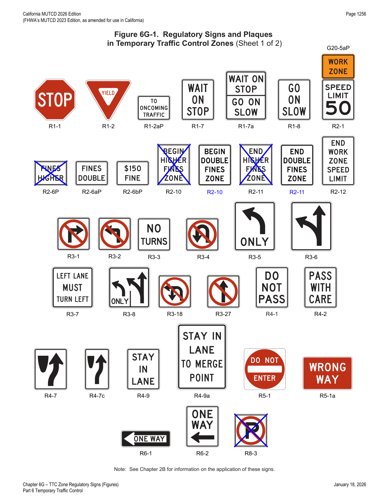
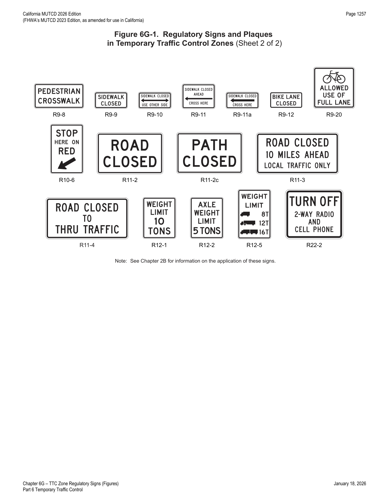
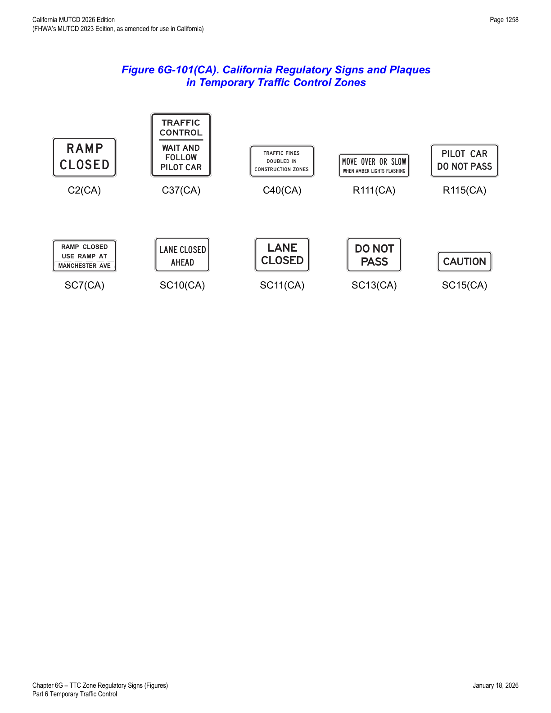

Part 6 · Temporary Traffic Control · Chapter 6G
TTC Zone Regulatory Signs
Every regulatory sign series used in temporary traffic control zones — road closures, weight limits, lane control, work-zone speed limits and higher-fines signage, pedestrian/sidewalk closure signs, and California-specific ramp-closure and moving-lane-closure signs — with full size tables.
6G.01Regulatory Sign Authority
- 01Regulatory signs such as those shown in Figure 6G-1 inform road users of traffic laws or regulations and indicate the applicability of legal requirements that would not otherwise be apparent.
- 02Regulatory signs shall be authorized by the public agency or official having jurisdiction and shall conform with Chapter 2B.
6G.02Regulatory Sign Design and Size
- 01TTC regulatory signs shall comply with the Standards for regulatory signs presented in Part 2 and in FHWA's "Standard Highway Signs" publication (see Section 1A.05).
- 02The sizes for TTC regulatory signs shall be as shown in Table 6G-1.
6G.03Regulatory Sign Applications
- 01If a TTC zone requires regulatory measures different from those existing, the existing permanent regulatory devices shall be removed or covered and superseded by the appropriate temporary regulatory signs. This change shall be made in compliance with applicable ordinances or statutes of the jurisdiction.
6G.04Road Closed Signs (R11-2 Series)
- 01The ROAD CLOSED (R11-2) sign (see Figure 6G-1) should be used when the roadway is closed to all road users except contractors' equipment or officially authorized vehicles. The R11-2 sign should be accompanied by appropriate warning and detour signing.
- 02STREET CLOSED (R11-2a), BRIDGE OUT (R11-2b), or PATH CLOSED (R11-2c) signs may be substituted for Road Closed signs where applicable.
- 03Road Closed signs should be installed at or near the center of the roadway on or above a Type 3 Barricade that closes the roadway (see Section 6K.07).
- 04Road Closed signs shall not be used where road user flow is maintained through the TTC zone with a reduced number of lanes on the existing roadway or where the actual closure is some distance beyond the sign.
6G.05Local Traffic Only Signs (R11-3 Series and R11-4)
- 01The Local Traffic Only signs (see Figure 6G-1) should be used where road user flow detours to avoid a closure some distance beyond the sign, but where local road users can use the roadway to the point of closure. These signs should be accompanied by appropriate warning and detour signing.
- 01aRefer to FHWA's List of Known Errors for errors in Paragraph 1. Refer to Section 1A.04 for more details.
- 02In rural applications, the Local Traffic Only sign should have the legend ROAD CLOSED XX MILES AHEAD, LOCAL TRAFFIC ONLY (R11-3).
- 03In urban areas, a ROAD (STREET) CLOSED TO THRU TRAFFIC (R11-4) sign or the legend ROAD CLOSED, LOCAL TRAFFIC ONLY may be used.
- 04In urban areas, a word message that includes the name of an intersecting street or well-known destination may be substituted for the words XX MILES AHEAD on the R11-3 sign where applicable.
- 05A STREET CLOSED (R11-3a) or BRIDGE OUT (R11-3b) sign may be substituted for a R11-3 sign, where applicable.
- 06The words BRIDGE OUT, BRIDGE CLOSED, or STREET CLOSED may be substituted for the words ROAD CLOSED on the R11-4 sign where applicable.
- 07The word RAMP may be substituted for ROAD or STREET where applicable.
6G.06Weight Limit Signs (R12-1, R12-2, and R12-5)
- 01A Weight Limit sign (see Figure 6G-1), which shows the gross weight or axle weight that is permitted on the roadway or bridge, shall be consistent with State or local regulations and shall not be installed without the approval of the authority having jurisdiction over the highway.
- 02When weight restrictions are imposed because of the activity in a TTC zone, a marked detour shall be provided for vehicles weighing more than the posted limit.
6G.07STAY IN LANE Signs (R4-9 and R4-9a)
- 01A STAY IN LANE (R4-9) sign (see Figure 6G-1) may be used where a multi-lane shift has been incorporated as part of the TTC on a highway to direct road users around road work that occupies part of the roadway on a multi-lane highway.
- 02A STAY IN LANE TO MERGE POINT (R4-9a) sign (see Figure 6G-1) should be used during late merge operations (see Section 6N.19) to direct traffic to use all available lanes until the merge point is reached.
6G.08Work Zone and Higher Fines Signs and Plaques
- 02A BEGIN HIGHER DOUBLE FINES ZONE (R2-10) sign (see Figure 6G-1) should be installed at or near the beginning of a TTC zone where increased fines are imposed for traffic violations, and an END HIGHER DOUBLE FINES ZONE (R2-11) sign (see Figure 6G-1) should be installed at or near the downstream end of the TTC zone.
- 03Alternate legends such as BEGIN (or END) DOUBLE FINES ZONE may also be used for the R2-10 and R2-11 signs.
- 04A FINES HIGHER, FINES DOUBLE, or $XX FINE plaque (see Section 2B.25 and Figure 6G-1) may be mounted below the Speed Limit sign if increased fines are imposed for traffic violations within the TTC zone.
- 05Individual signs and plaques for work zone speed limits and higher fines may be combined into a single sign or may be displayed as an assembly of signs and plaques.
- 06The TRAFFIC FINES DOUBLED IN CONSTRUCTION ZONES (C40(CA)) and TRAFFIC FINES DOUBLED IN WORK ZONES (C40A(CA)) (see Figure 6G-1(CA)) signs may be placed approximately 500 feet in advance of the first required TTC sign(s). The placement of the C40(CA) and C40A(CA) signs is at the discretion of the responsible person(s) in charge of the work zone.
- 07Refer to CVC § 42009 for fines for offenses committed in highway construction or maintenance area. In California, per CVC only doubling of the fines is allowed, not higher fines of other denominations.
- 08The C40A(CA) sign is intended to be manufactured as a fabric sign and should be used on a short-term (daily) basis only. Longer-term situations should use the C40(CA) sign.
- 09CVC § 22362 applies to the "when workers are present" condition, and signs need to be covered or removed when no work is in progress. However, per CVC § 21367, an agency can "…regulate the movement of traffic…whenever the traffic would endanger the safety of workers or the work would interfere with or endanger the movement of traffic through the area." If obstructions would be present throughout the project duration, the signs would not need to be covered or removed. This would also apply to situations where the construction work changes the highway configuration, curvature, or elevation, making it necessary to post reduced speed limits.
- 10The Speed Limit (R2-1) sign with a WORK ZONE (G20-5aP) plaque mounted above it may be used for the protection of workers during working hours to reduce the speed limit within a TTC zone.
- 11The R2-1 sign with G20-5aP plaque mounted above it shall only be used in conjunction with appropriate advance warning signs.
- 12The R2-1 signs with G20-5aP plaques mounted above them shall be removed or covered promptly when no longer applicable.
- 13The R2-1 sign with G20-5aP mounted above it is authorized for use by CVC § 22362. This section provides authority to post a speed limit of not less than 25 mph at locations where employees of any contractor, or of the agency in charge of the job, are engaged in work upon the roadway.
- 14Posting unrealistically low speed limits will result in loss of sign credibility and a high violation rate.
- 15Before using an R2-1 sign with G20-5aP plaque mounted above it, work zone conditions should be analyzed to determine what maximum speed limit would be appropriate for that particular location.
- 16The R2-1 sign with G20-5aP plaque mounted above it should be placed within 400 feet of the zone where workers are on the roadway or so nearly adjacent as to be endangered by traffic.
- 17The R2-1 sign with G20-5aP plaque mounted above it may be provided by the agency having jurisdiction over the street or road.
- 18The R2-1 sign with G20-5aP plaque mounted above it should be posted a maximum distance of 400 feet in advance of where, and when, workers are present; and the Speed Reduction (W3-5) sign or Speed Zone Ahead (R2-4(CA)) sign informs road users of the reduced speed limit TTC zone.
- 19As the TTC zone activities change, signs should be moved as appropriate.
In practice, the 400-foot placement distance and the 25-mph floor are the two numbers most often cross-checked in a work-zone speed-reduction plan review, along with the requirement to remove or cover the R2-1/G20-5aP assembly the moment it is no longer applicable — leaving it up after hours is a common citation-triggering error under CVC § 22362.
6G.09PEDESTRIAN CROSSWALK Sign (R9-8)
- 01The PEDESTRIAN CROSSWALK (R9-8) sign (see Figure 6G-1) may be used to indicate where a temporary crosswalk has been established.
- 02If a temporary crosswalk is established, it shall be accessible to pedestrians with disabilities in accordance with Section 6C.03.
6G.10SIDEWALK CLOSED Signs (R9-9, R9-10, R9-11, and R9-11a)
- 01SIDEWALK CLOSED signs (see Figure 6G-1) should be used where pedestrian flow is restricted. Bicyclist/Pedestrian Detour (M4-9a) signs or Pedestrian Detour (M4-9b) signs should be used where pedestrian flow is rerouted (see Section 6I.02).
- 02The SIDEWALK CLOSED (R9-9) sign should be installed at the beginning of the closed sidewalk, at the intersections preceding the closed sidewalk, and elsewhere along the closed sidewalk as needed.
- 03The SIDEWALK CLOSED, (ARROW) USE OTHER SIDE (R9-10) sign should be installed at the beginning of the restricted sidewalk when a parallel sidewalk exists on the other side of the roadway.
- 04The SIDEWALK CLOSED AHEAD, (ARROW) CROSS HERE (R9-11) sign should be used to indicate to pedestrians that sidewalks beyond the sign are closed and to direct them to open crosswalks, sidewalks, or other travel paths.
- 05The SIDEWALK CLOSED, (ARROW) CROSS HERE (R9-11a) sign should be installed just beyond the point to which pedestrians are being redirected.
- 06These signs are typically mounted on a detectable barricade to encourage compliance and to communicate with pedestrians that the sidewalk is closed. Printed signs are not useful to many pedestrians with vision disabilities. A barrier or barricade detectable by a person with a vision disability is sufficient to indicate that a sidewalk is closed. If the barrier is continuous with detectable channelizing devices for an alternate route, accessible signing might not be necessary.
6G.11TURN OFF 2-WAY RADIO AND CELL PHONE Sign (R22-2)
- 01The TURN OFF 2-WAY RADIO AND CELL PHONE (R22-2) sign (see Figure 6G-1) shall be used to require road users to turn off mobile radio transmitters and cellular telephones where blasting operations occur.
- 02Section 6H.25 contains information about the full sequence of signs for blasting zones and the specific requirements for location of this regulatory sign.
6G.12Other Regulatory Signs
- 01Regulatory word message signs other than those classified and specified in this Manual and the "Standard Highway Signs" publication (see Section 1A.05) may be developed and used based on engineering judgment to aid the enforcement of other laws or regulations in TTC zones.
- 02Special regulatory signs should comply with the general requirements of color, shape, and alphabet size and series. The sign message should be brief, legible, and clear.


| Sign or Plaque | Sign Designation | Section | Conventional Road | Freeway or Expressway | Minimum |
|---|---|---|---|---|---|
| Stop | R1-1 | 6G.02 | 30 x 30* | — | — |
| Stop (on Stop/Slow Paddle) | R1-1 | 6D.02 | 18 x 18 | — | — |
| Yield | R1-2 | 6G.02 | 36 x 36 x 36* | — | 30 x 30 x 30 |
| To Oncoming Traffic (plaque) | R1-2aP | 6G.02 | 36 x 30 | 48 x 36 | 24 x 18 |
| Wait on Stop | R1-7 | 6L.03 | 24 x 30 | 24 x 30 | — |
| Wait on Stop – Go on Slow | R1-7a | 6G.03** | 30 x 36 | 30 x 36 | — |
| Go on Slow | R1-8 | 6L.03 | 24 x 30 | 24 x 30 | — |
| Speed Limit | R2-1 | 6G.08 | 24 x 30* | 36 x 48 | — |
| Fines Higher (plaque) | R2-6P | 6G.08 | 24 x 18 | 36 x 24 | — |
| Fines Double (plaque) | R2-6aP | 6G.08 | 24 x 18 | 36 x 24 | — |
| $XX Fine (plaque) | R2-6bP | 6G.08 | 24 x 18 | 36 x 24 | — |
| Double Begin Higher Fines Zone | R2-10 | 6G.08 | 24 x 30 | 36 x 48 | — |
| Double End Higher Fines Zone | R2-11 | 6G.08 | 24 x 30 | 36 x 48 | — |
| End Work Zone Speed Limit | R2-12 | 6G.08 | 24 x 36 | 36 x 54 | — |
| Movement Prohibition | R3-1,2,3,4 | 6G.02 | 24 x 24* | 36 x 36 | — |
| Mandatory Movement Lane Control – Turn Only | R3-5 | 6G.02 | 30 x 36 | — | — |
| Optional Movement Lane Control – Thru and Turn | R3-6 | 6G.02 | 30 x 36 | — | — |
| Right (Left) Lane Must Turn Right (Left) | R3-7 | 6G.02 | 30 x 30* | — | — |
| Advance Intersection Lane Control (2 lanes) | R3-8 | 6G.02 | 30 x 30 | — | — |
| Movement Prohibition – No U or Left Turn | R3-18 | 6G.02 | 24 x 24* | 36 x 36 | — |
| Movement Prohibition – No Straight Through | R3-27 | 6G.02 | 24 x 24* | 36 x 36 | — |
| Do Not Pass | R4-1 | 6G.02 | 24 x 30 | 36 x 48 | — |
| Pass With Care | R4-2 | 6G.02 | 24 x 30 | 36 x 48 | — |
| Keep Right | R4-7 | 6G.02 | 24 x 30 | 36 x 48 | — |
| Narrow Keep Right | R4-7c | 6G.02 | 18 x 30 | — | — |
| Stay in Lane | R4-9 | 6G.07 | 24 x 30 | 36 x 48 | — |
| Stay In Lane To Merge Point | R4-9a | 6G.07 | 36 x 48 | 36 x 48 | — |
| Do Not Enter | R5-1 | 6G.02 | 30 x 30* | 36 x 36 | — |
| Wrong Way | R5-1a | 6G.02 | 36 x 24* | 42 x 30 | — |
| One Way | R6-1 | 6G.02 | 36 x 12* | 48 x 18 | — |
| One Way | R6-2 | 6G.02 | 24 x 30* | 36 x 48 | — |
| No Parking (symbol) | R8-3 | 6G.02 | 24 x 24* | 36 x 36 | — |
| Pedestrian Crosswalk | R9-8 | 6G.09 | 36 x 18 | — | — |
| Sidewalk Closed | R9-9 | 6G.10 | 24 x 12 | — | — |
| Sidewalk Closed, Use Other Side | R9-10 | 6G.10 | 24 x 12 | — | — |
| Sidewalk Closed Ahead, Cross Here | R9-11 | 6G.10 | 24 x 18 | — | — |
| Sidewalk Closed, Cross Here | R9-11a | 6G.10 | 24 x 12 | — | — |
| Bike Lane Closed | R9-12 | 6P.01 | 24 x 12 | — | — |
| Stop Here on Red | R10-6 | 6L.04 | 24 x 36 | — | — |
| Road Closed | R11-2, 2a, 2b, 2c | 6G.04 | 48 x 30 | — | — |
| Road Closed – Local Traffic Only | R11-3, 3a, 3b, 4 | 6G.05 | 60 x 30 | — | — |
| Weight Limit | R12-1, 2 | 6G.06 | 24 x 30 | 36 x 48 | — |
| Weight Limit | R12-5 | 6G.06 | 24 x 36 | 36 x 48 | — |
| Turn Off 2-Way Radio and Cell Phone | R22-2 | 6G.11 | 42 x 36 | 42 x 36 | — |
| Work Zone (plaque) | G20-5aP | 6G.08 | 24 x 18 | 30 x 24 | — |
* See Table 2B-1 for minimum size required for signs facing traffic on multi-lane conventional roads. ** Refer to FHWA's List of Known Errors for an error in the Section reference for the R1-7a sign (Section 1A.04). Larger signs may be used wherever necessary for greater legibility or emphasis; dimensions are shown in inches as width × height.
6G.101(CA)RAMP CLOSED (C2(CA)) and RAMP CLOSED, USE RAMP AT __ (SC7(CA)) Signs
- 01The RAMP CLOSED (C2(CA)) sign (refer to Figure 6G-1(CA)) shall be installed at the entrance of an on-ramp or off-ramp that is closed to all road users.
- 02The RAMP CLOSED, USE RAMP AT __ (SC7(CA)) sign may be used in lieu of the RAMP CLOSED (C2(CA)) sign.
- 03The RAMP CLOSED AHEAD (C19(CA)) sign (refer to Figure 6H-1(CA)) should be used in advance of the point where an on-ramp or off-ramp is closed to all road users.
- 04The USE NEXT EXIT (C38(CA)) sign may be used with the RAMP CLOSED (C2(CA)) sign on freeways if the next exit provides access to destinations from the closed ramp.
- 05The Day – Specific Hours (SC6-3P(CA)) plaque should be installed below the RAMP CLOSED (C2(CA)) sign to notify motorists when a freeway or expressway on-ramp or off-ramp is temporarily closed for no more than one day.
- 06The Multiple Days – Specific Hours (SC6-4P(CA)) plaque should be installed below the RAMP CLOSED (C2(CA)) sign to notify motorists when a freeway or expressway on-ramp or off-ramp is temporarily closed for multiple consecutive days.
- 07The RAMP CLOSED assembly should be removed when the ramp is reopened to traffic.
- 08The SC6-3P(CA) and SC6-4P(CA) plaques (refer to Figure 6I-1(CA)) shall display the correct day of the week, month, calendar date, and times during which the ramp is closed.
- 09For extended ramp closures, a PCMS may be used in advance of the ramp to supplement the RAMP CLOSED assembly for the duration of the closure.
- 10The RAMP CLOSED, USE RAMP AT ___ (SC7(CA)) sign may be used in lieu of the combination of the RAMP CLOSED (C2(CA)) sign and USE NEXT EXIT (C38(CA)) sign as shown on Caltrans' Standard Plan T-14 to inform motorists of a closed entrance or exit ramp and to provide an alternate route. See Section 1A.05 for information regarding this publication.
- 11The ___ EXIT – RAMP CLOSED (SC8(CA)) sign should be used to inform motorists of a closed exit ramp.
- 12If used, the SC8(CA) sign shall be placed on the right shoulder, upstream of the preceding exit ramp.
- 13The EXIT with Arrow (SC18(CA)) sign should be used to inform motorists of the direction to follow for a freeway exit within a work zone.
6G.102(CA)MOVE OVER OR SLOW WHEN AMBER LIGHTS FLASHING Sign (R111(CA))
- 01On freeways, for lane and/or shoulder closures, incident management, and short-duration work, the MOVE OVER OR SLOW WHEN AMBER LIGHTS FLASHING (R111(CA)) sign (refer to Figure 6G-1(CA)) may be temporarily displayed on the back of a work vehicle to warn and regulate road users to move over and/or slow when passing work vehicles displaying a flashing amber warning light within or adjacent to the highway.
6G.103(CA)Moving Lane Closure Signs (W23-1 and SC10(CA), SC11(CA), SC13(CA), SC15(CA))
01 On State highways, the following signs (see Figures 6H-1 and 6G-1(CA)) shall be used as shown in Caltrans' Standard Plans T15, T16, and T17 for moving lane closures. See Section 1A.05 for information regarding this publication.
- LANE CLOSED AHEAD or ROAD WORK AHEAD (SC10(CA)).
- LANE CLOSED (SC11(CA)).
- SLOW TRAFFIC AHEAD (W23-1).
- DO NOT PASS (SC13(CA)).
- CAUTION (SC15(CA)).
- 02The Moving Lane Closure signs shall have a black legend on either a white or an orange background.
- 03If used, the SC10(CA) sign and a Type II arrow board shall be mounted on the designated sign vehicle.
- 04The SC11(CA) sign and a Type II arrow board shall be mounted on the designated sign vehicle.
- 05If used, the W23-1 sign shall be mounted on the rear of the designated sign vehicle.
- 06The SC13(CA) sign shall be mounted on the rear and/or the front of the designated sign vehicle.
- 07If used, the SC15(CA) sign shall be mounted on the front of the designated sign vehicle.

| Sign or Plaque | Sign Designation | Section | Conventional Road (Minimum) | Expressway | Freeway | Oversized |
|---|---|---|---|---|---|---|
| RAMP CLOSED | C2(CA) | 6G.101(CA) | 48 x 30 | 48 x 30 | 48 x 30 | — |
| TRAFFIC CONTROL — WAIT AND FOLLOW PILOT CAR | C37(CA) | 6E.04 | 36 x 42 | 36 x 42 | — | — |
| TRAFFIC FINES DOUBLE IN CONSTRUCTION ZONES | C40(CA) | 6G.08 | 36 x 36 | 48 x 48 | 48 x 48 | — |
| MOVE OVER OR SLOW WHEN AMBER LIGHTS FLASHING | R111(CA) | 6G.102(CA) | 54 x 18 | 54 x 18 | 54 x 18 | — |
| PILOT CAR DO NOT PASS | R115(CA) | 6E.04 | 36 x 18 | 36 x 18 | — | — |
| RAMP CLOSED, USE RAMP AT ___ | SC7(CA) | 6G.101(CA) | 84 x 42 | 84 x 42 | 84 x 42 | — |
| LANE CLOSED AHEAD or ROAD WORK AHEAD | SC10(CA) | 6G.103(CA) | 48 x 30 | 66 x 36 | 66 x 36 | — |
| LANE CLOSED | SC11(CA) | 6G.103(CA) | 42 x 30 | 54 x 42 | 54 x 42 | — |
| DO NOT PASS | SC13(CA) | 6G.103(CA) | 42 x 30 | 54 x 42 | 54 x 42 | — |
| CAUTION | SC15(CA) | 6G.103(CA) | 42 x 18 | 54 x 24 | 54 x 24 | — |
| DOUBLE FINE ZONE | SR54(CA) | 2B.25 | 30 x 30 | 42 x 42 | 42 x 42 | — |
★ Key Takeaways — Chapter 6G
- All TTC regulatory signs must be authorized by the agency having jurisdiction, conform to Chapter 2B, and follow the sizes in Table 6G-1 / 6G-1(CA); when temporary regulatory measures differ from existing ones, the existing permanent devices must be removed or covered.
- ROAD CLOSED (R11-2 series) signs are for roads closed to all but authorized vehicles and must never be used where reduced-lane flow is maintained or where the closure is some distance beyond the sign; Local Traffic Only (R11-3/R11-4) signs handle the "detour but locals may proceed" case.
- Weight Limit signs (R12-1, R12-2, R12-5) require jurisdictional approval, and a marked detour is mandatory for overweight vehicles when TTC-driven weight restrictions apply.
- Work-zone speed-limit signage (R2-1 with G20-5aP plaque) must be paired with advance warning signs, posted within 400 ft of the worker zone, never below 25 mph, and promptly removed/covered when no longer applicable; higher/double fines (R2-10/R2-11/C40(CA)/C40A(CA)) are permitted in California only as fine doubling, per CVC § 42009.
- Sidewalk-closure signs (R9-9 through R9-11a) should be mounted on detectable barricades since printed text alone does not serve pedestrians with vision disabilities; temporary crosswalks (R9-8) must be accessible per Section 6C.03.
- California adds a distinct set of ramp-closure signs (C2(CA), SC7(CA), C19(CA), C38(CA), SC8(CA), SC18(CA)) and moving-lane-closure vehicle-mounted signs (SC10/11/13/15(CA) plus W23-1), each with specific vehicle-mounting requirements (front, rear, or both) and a black-on-white-or-orange color scheme.